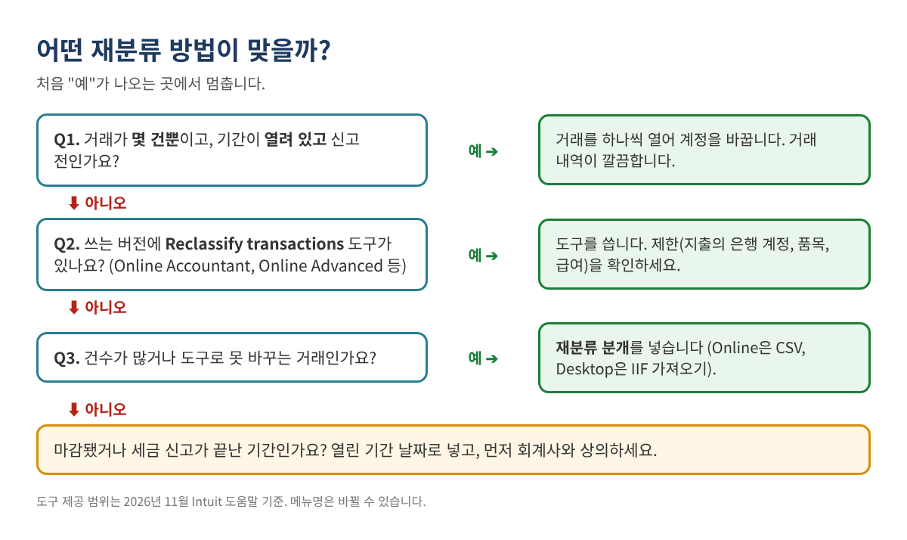
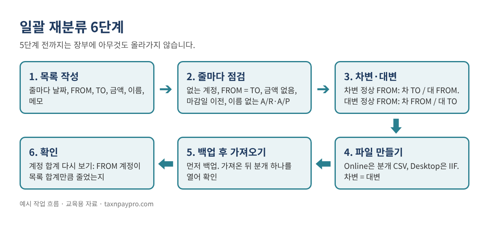
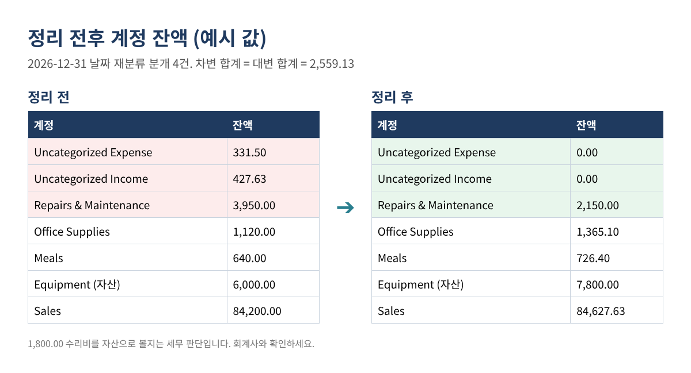

잘못된 계정에 들어간 거래 수십 건, 분개 한 번으로 한꺼번에 재분류하는 방법
연말이 되어 손익계산서(Profit & Loss)를 보니 Uncategorized Expense와 Uncategorized Income에 수백~수천 달러가 있고, 엉뚱한 계정에 들어간 거래도 수십 건입니다. 하나씩 열어 계정을 바꾸면 오후가 다 갑니다. 일괄 재분류 도구가 있긴 하지만 일부 버전에만 있고, 모든 거래를 바꿀 수 있는 것도 아닙니다.
이 글은 더 빠르고 안전한 방법을 설명합니다. 옮길 내용을 엑셀에 한 번만 적고, 간단한 수식으로 차변·대변을 정하고 줄마다 점검한 다음, 분개(Journal Entry) 한 건 또는 몇 건으로 올리는 방법입니다. QuickBooks Online(CSV 가져오기)과 Desktop(IIF 가져오기) 모두 가능하고, 분개 가져오기를 지원하는 다른 회계 프로그램에도 같은 원리가 적용됩니다.
이런 분께 필요합니다: 연말 마감이나 세금 신고 전에 잘못 분류된 거래를 정리하는 사장님, 북키퍼, 세무 대리인.
먼저 방법부터 고르기
재분류 분개가 언제나 정답은 아닙니다. 거래가 몇 건뿐이고 기간이 열려 있다면, 원래 거래를 고치는 것이 기록상 가장 깔끔합니다. 분개 방식은 목록이 길거나 원래 거래를 고치기 어려울 때 가장 좋습니다.

Intuit 도움말에 따르면 Reclassify transactions 도구는 QuickBooks Online Accountant(모든 구독의 고객 대상)와 QuickBooks Online Advanced에 있습니다. 도움말의 경로는 Settings > Dimensions > Dimension assignment > Reclassify transactions이며, Profit and Loss 또는 Balance Sheet 계정을 고르고, 거래를 선택해 Reclassify, 새 계정·클래스·로케이션을 정한 뒤 Apply를 누릅니다. 제한도 있습니다. 지출 거래의 은행·카드 계정은 못 바꾸고, 품목(Item)이 있는 거래는 클래스만 바뀌며, 급여 거래는 급여 쪽에서 고쳐야 합니다. 도구로 못 바꾸는 거래는 분개로 처리하면 됩니다.
재분류 분개의 원리
재분류는 금액을 한 계정(FROM)에서 빼서 다른 계정(TO)에 넣는 것입니다. 어느 쪽이 차변인지는 FROM 계정의 정상 잔액 방향으로 정해집니다.
- 차변이 정상인 계정(비용, 매출원가, 자산): 차변 TO, 대변 FROM.
- 대변이 정상인 계정(수익, 부채, 자본): 차변 FROM, 대변 TO.
예: 사무용품 245.10이 Uncategorized Expense에 들어가 있습니다. 비용은 차변 정상이므로 차) Office Supplies 245.10 / 대) Uncategorized Expense 245.10. 매출 427.63이 Uncategorized Income에 있다면, 수익은 대변 정상이므로 차) Uncategorized Income 427.63 / 대) Sales 427.63.

1단계: 계정과목표와 옮길 거래 내보내기
- 계정과목표(Chart of accounts)를 Accts 시트에 내보냅니다. A열 계정 이름, B열 유형. C열에는 정상 방향을 적습니다: 비용·매출원가·자산은 Debit, 수익·부채·자본은 Credit.
- 정리할 계정(예: 2026년 Uncategorized Expense)의 거래 보고서를 뽑아 내보냅니다. 이것이 원본 목록입니다.
계정 이름은 프로그램에 보이는 그대로 정확히 씁니다. 하위 계정은 상위:하위 형식 전체를 씁니다. Intuit 가져오기 도움말은 하위 계정 이름만 쓰면 "Line Account Invalid" 오류가 난다고 경고합니다.
2단계: 재분류 목록 만들기
Moves 시트에 한 줄에 하나씩 적습니다.
| 날짜 (A) | FROM (B) | TO (C) | 금액 (D) | 이름 (E) | 메모 (F) |
|---|---|---|---|---|---|
| 2026-12-31 | Uncategorized Expense | Office Supplies | 245.10 | Staples 영수증 3-11월 | |
| 2026-12-31 | Uncategorized Expense | Meals | 86.40 | 9/12 거래처 점심 | |
| 2026-12-31 | Repairs & Maintenance | Equipment | 1,800.00 | 컴프레서, 회계사 확인 | |
| 2026-12-31 | Uncategorized Income | Sales | 427.63 | 10월 Etsy 정산 |
표 1. 예시 값입니다. 한 줄에 이동 하나. 나중에 여러 줄을 분개 하나로 묶어도 됩니다.
FROM과 TO가 같은 작은 금액 여러 건은 한 줄로 합쳐도 됩니다. 다만 메모나 별도 시트에 어떤 거래가 들어 있는지 남겨 두세요.
3단계: 수식으로 차변·대변 정하기
Moves 시트에 열을 추가합니다(Excel 365 또는 Google Sheets. XLOOKUP이 없으면 VLOOKUP 사용).
G FROM의 정상 방향: =XLOOKUP(B2, Accts!$A:$A, Accts!$C:$C, "?") H 차변 계정: =IF(G2="Debit", C2, B2) I 대변 계정: =IF(G2="Debit", B2, C2)
이제 줄마다 어느 계정을 차변, 어느 계정을 대변으로 할지 정확히 나옵니다.
4단계: 가져오기 전에 줄마다 점검
K1 칸에 마감일(장부를 잠근 날짜)을 넣고 점검 열을 추가합니다.
J: =IF(COUNTIF(Accts!$A:$A,B2)=0,"FROM 계정 없음", IF(COUNTIF(Accts!$A:$A,C2)=0,"TO 계정 없음", IF(B2=C2,"FROM = TO", IF(N(D2)<=0,"금액 없음", IF(A2<=$K$1,"마감일 이전", IF(AND(OR(ISNUMBER(SEARCH("Receivable",B2&C2)),ISNUMBER(SEARCH("Payable",B2&C2))),E2=""),"이름 필요","OK"))))))
OK인 줄만 가져오기 파일에 넣습니다. 외상매출금(A/R)·외상매입금(A/P) 줄은 손님이나 거래처 이름이 있어야 해서 마지막 점검이 들어 있습니다.
5단계: 가져오기 파일 만들기
QuickBooks Online: 분개 CSV
Intuit 도움말에 나온 필드는 Journal No., Journal Date, Account Name, Debits, Credits, Description이고 이름(Name)은 선택입니다. 이동 하나가 두 줄이 됩니다.
| Journal No. | Journal Date | Account Name | Debits | Credits | Description |
|---|---|---|---|---|---|
| RC-2026-01 | 12/31/2026 | Office Supplies | 245.10 | Reclass from Uncategorized Expense | |
| RC-2026-01 | 12/31/2026 | Uncategorized Expense | 245.10 | Reclass to Office Supplies | |
| RC-2026-02 | 12/31/2026 | Uncategorized Income | 427.63 | Reclass to Sales | |
| RC-2026-02 | 12/31/2026 | Sales | 427.63 | Reclass from Uncategorized Income |
표 2. CSV 예시. 한 분개의 줄은 모두 같은 Journal No.와 날짜를 쓰고, 다음 분개는 새 번호를 씁니다.
CSV를 저장하기 전에 파일 전체와 Journal No.별로(SUMIFS) =SUM(Debits)=SUM(Credits)인지 확인합니다.
가져오기: Settings(톱니바퀴) > Import Data > Journal Entries → Browse로 파일 선택 → Next → 필드 매핑 → Next → Start import. Intuit 도움말은 가져오기 전에 계정 번호(Account numbers) 표시를 끄고, 새 계정은 먼저 만들어 두라고 합니다. "Warn if duplicate journal number is used"가 켜져 있으면 이미 쓰인 번호의 분개는 실패합니다. 형식을 비교하고 싶으면 가져오기 화면에서 Intuit 샘플 파일을 받아 보세요.
QuickBooks Desktop: IIF 파일
Desktop은 탭으로 구분된 IIF 텍스트 파일로 분개를 가져옵니다. 분개 하나는 TRNS 줄로 시작하고, 나머지 계정마다 SPL 줄, 마지막은 ENDTRNS입니다. 양수는 차변, 음수는 대변입니다.
!TRNS TRNSTYPE DATE ACCNT AMOUNT DOCNUM MEMO !SPL TRNSTYPE DATE ACCNT AMOUNT DOCNUM MEMO !ENDTRNS TRNS GENERAL JOURNAL 12/31/2026 Office Supplies 245.10 RC-2026-01 Reclass SPL GENERAL JOURNAL 12/31/2026 Uncategorized Expense -245.10 RC-2026-01 Reclass ENDTRNS
IIF 가져오기는 되돌리기(Undo)가 없으니 반드시 회사 파일을 먼저 백업하고 File > Utilities > Import > IIF Files로 가져옵니다. 전체 목록 전에 분개 한 건으로 먼저 시험해 보세요.
6단계: 확인
같은 기간으로 손익계산서(또는 계정 목록)를 다시 뽑습니다. FROM 계정은 해당 줄 합계만큼 줄고, TO 계정은 같은 금액만큼 늘어야 합니다.

자주 하는 실수
- 수익 계정의 부호를 거꾸로. 수익 계정에서 금액을 빼는 것은 그 계정의 차변입니다.
- CSV에 하위 계정 이름만 씀. 상위:하위로 쓰세요.
- 마감됐거나 신고가 끝난 기간 날짜로 분개. 회계사가 따로 말하지 않으면 열린 기간 날짜를 씁니다.
- 은행·카드 계정을 분개로 재분류. 대사 끝난 잔액이 바뀝니다. 은행이 잘못됐다면 원래 거래를 고치세요.
- 근거 없는 거대한 분개 한 건. Moves 시트를 분개와 함께 보관해 무엇을 왜 옮겼는지 누구나 볼 수 있게 하세요.
- 이름 없이 A/R·A/P 재분류. 미결 잔액이 어느 손님·거래처에도 붙지 않습니다.
자주 묻는 질문
재분류 분개로 세금이 바뀌나요?
비용 계정끼리 옮기면 순이익은 대개 그대로지만, 식대나 장비처럼 세무상 처리가 달라질 수 있습니다. 수익 계정으로 넣거나 빼면 이익이 바뀝니다. 세무 대리인과 검토하세요.
날짜는 연말로 하나요, 원래 날짜로 하나요?
정리용으로는 연말 날짜가 흔하지만, 월별 보고서도 맞아야 한다면 줄마다 원래 월을 쓰세요. 잠긴 기간 날짜는 회계사와 상의 없이 쓰지 마세요.
가져온 것을 취소할 수 있나요?
Online에서 가져온 분개는 하나씩 삭제할 수 있습니다. Desktop의 IIF 가져오기는 되돌리기가 없어서 먼저 백업하는 것입니다.
그냥 거래를 고치면 안 되나요?
몇 건뿐이면 그렇게 하세요. 분개는 원래 거래를 옛 계정에 그대로 두기 때문에, 거래 보고서에 원래 거래와 재분류가 둘 다 보입니다.
체크리스트
- ☐ 방법 선택: 거래 수정, 재분류 도구, 분개
- ☐ 계정과목표를 정상 방향과 함께 내보내기
- ☐ Moves 목록 작성, 모든 줄 OK
- ☐ 파일 전체와 분개별 차변 = 대변
- ☐ 계정 번호 끄기, 새 계정 추가, 백업(Desktop)
- ☐ 가져온 뒤 분개 한 건 열어 확인
- ☐ FROM·TO 계정 합계 확인, Moves 시트를 분개와 함께 보관
바로 쓰는 엑셀이 필요하다면
Bulk Reclass Journal Entry Builder(일괄 계정 재분류 분개 생성기)는 Etsy와 Gumroad에서 영문판과 영한 병기판으로 판매 중입니다. 차변·대변을 정하고 줄마다 점검한 뒤, 같은 목록으로 Online CSV와 Desktop IIF 형식을 모두 만들어 주며 6쪽 가이드가 들어 있습니다.
이 글은 교육용 자료이며 세무·법률·회계 자문이 아닙니다. 어떤 계정이 맞는지는 사실관계에 따라 다르며 특정 결과를 보장하지 않습니다. 예시 값은 가상입니다. 메뉴 이름은 바뀔 수 있습니다. QuickBooks is a registered trademark of Intuit Inc.; not affiliated with or endorsed by Intuit.
출처(2026년 11월 확인): Intuit, "Import journal entries in QuickBooks Online": https://quickbooks.intuit.com/learn-support/en-us/help-article/import-export-data-files/import-journal-entries-quickbooks-online/L4tQBwbs7_US_en_US · Intuit, "Reclassify or move multiple transactions": https://quickbooks.intuit.com/learn-support/en-us/help-article/reclassify-transactions/reclassify-move-multiple-transactions/L249lPKyg_US_en_US · Intuit, "How to reclassify transactions in QuickBooks Online Advanced": https://quickbooks.intuit.com/learn-support/en-us/help-article/reclassify-transactions/reclassify-transactions-quickbooks-online-advanced/L88eDKSmC_US_en_US